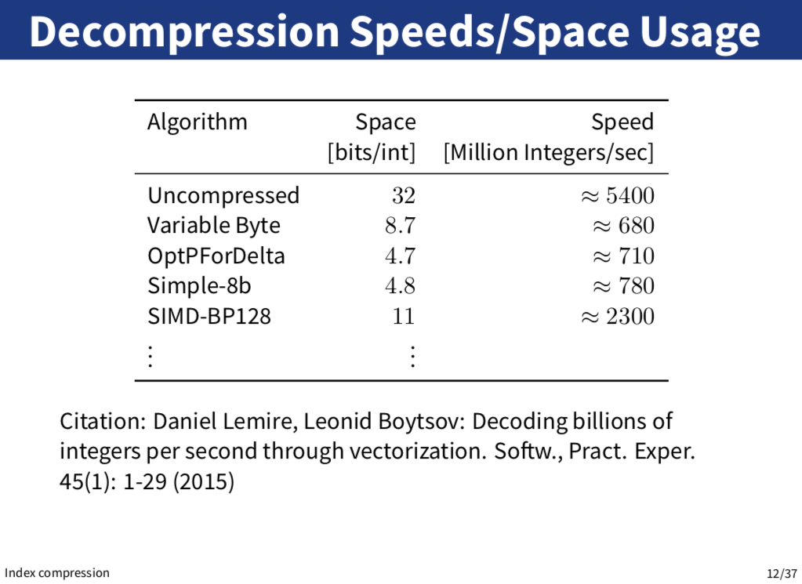

Preprocessing
Text Normalization
Definition
- words: sequence of characters
- token: each instance of "the"
- type: the distinct word "the"
- sentence
- document
- corpus
Text Normalization
- remove unwanted formatting
- segment structure
- tokenize words
- normalize words
- remove unwanted words
Sentence Segmentation
- break on sentence punctuation
- use regular expression to require capital
- lexicons
Tokenization
- separate out alphabetic strings
- abbreviations
- hyphens
- numbers
- dates
- clitics
- internet languages
- multiword units
Normalization
- lower casing
- remove morphology
- inflectional morphology: create grammatical variants
- Lemmatization: remove any inflection to reach the uninflected form
- derivational morphology: create distinct words
- Stemming: strip off all suffixes
- The Porter Stemmer
- Stemming: strip off all suffixes
- inflectional morphology: create grammatical variants
- correct spelling
- expanding abbreviation
- fix spelling errors
- string distance
- modelling of error types
- n-gram language model
- normalizing spelling variations
- expanding abbreviations
Stop Words
- a list of words to be removed from the document
Vector Space Model
Document Representation
- each document is a bag of words
- discard word order information
- record counts
Term-Document Matrix
Matrix
- rows: documents
- columns: terms
- cells
- binary indicators
- frequency counts
- score attached to a word and a document
Term Space
- consider documents as points (vectors) in a multi-dimensional term space
- each of the terms becomes a dimension
Cosine Distance
$ cos(a,b) = \frac{ab}{|a||b|} $
Speed up
- normalized to unit length
- just dot product $ab$
TF-IDF
- TF: term frequency
- the occurrence count for the term
- IDF: inversed document frequency
- how rare the word is
- e.g. $ idf_t = log_2\frac{N}{df_t} $
- $N$: the number of documents
- $df_t$: the number of documents containing t
Example
- scale each TF column by its IDF score
- normalize (divide each row by vector magnitude)
- compute dot product for each document
- Index:
- pre-compute the TF*IDF vectors for all documents
- Index:
- rank by cosine
Compression
Index Compression
Benefits
- reduce storage usage
- keep larger parts of the index in memory
- faster query processing
Principles
- information content: characterized by entropy
- $ H(T) = - \sum_{s \in \sum{}} {\frac{f_s}{n} {\log_2 \frac{f_s}{n}}}$
- $f_s$: frequency of symbol $s$ in $T$
- $n$: the length of $T$
Compression Schemes
Posting List Compression
- minimize storage costs
- fast sequential access
- support GEQ(x) operation: return the smallest item in the list greater or equal to x

Variable Byte Compression
- use variable number of bytes to represent integers
- each byte contains 7 bits "payload" and 1 continuation bit
- storage cost
| number range | number of bytes |
|---|---|
| 0 ~ 127 ($2^7$) | 1 |
| 128 ~ 16383 ($2^{14}$) | 2 |
| 16384 ~ 2097151 ($2^{21}$) | 3 |


OptPForDelta Compression
// TODO
Comparison

Fast Searching
- compress
- store an sample representing the largest/smallest value in the block
- use sample to efficiently seek position
GEQ
Greater or Equal to x
binary search over uncompressed sample values to find destination block
- decompress destination block to determine final offset in posting list
Index Construction
Static
- static collection of docs
- offline construction (query after construction)
- fixed(adj. 稳定的) at query time (no update)
Dynamic
- doc collection grows over time at a certain rate
- docs should be searchable immdediately
- update or delete docs
Merge Batches
- open n files containing batches
- read a part of terms from each file
- Perform n-way merge, merge terms and equivalent doc ids

Problem

Logarithmic Indexing
- use a logarithmic number ($$logN$$) of indexes.
- store index of size $$ 2^i * n $$ at each level
- query all $$logN$$ indexes and merge
- construction cost: O($$Nlog(\frac{N}{n})$$)
Distributed Index Construction
- process
- break documents into shards
- balance shards such that indexing and search are evenly distributed (hard)
- search
- query each shard and merge results (hard)